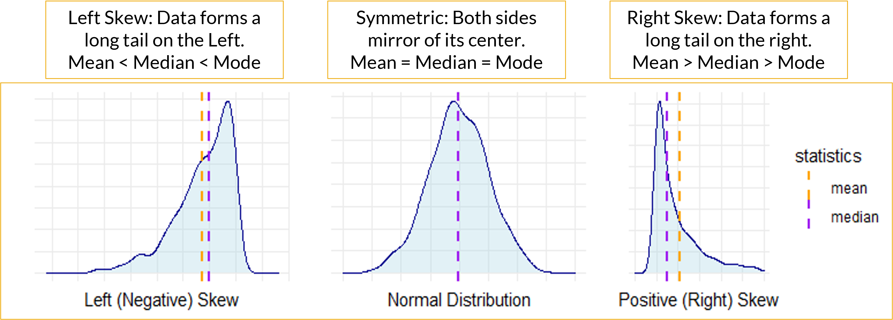
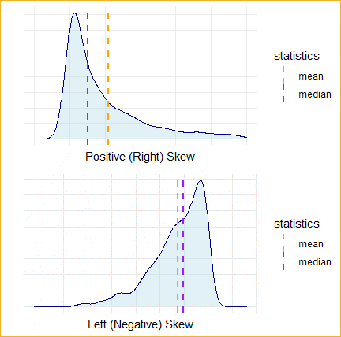
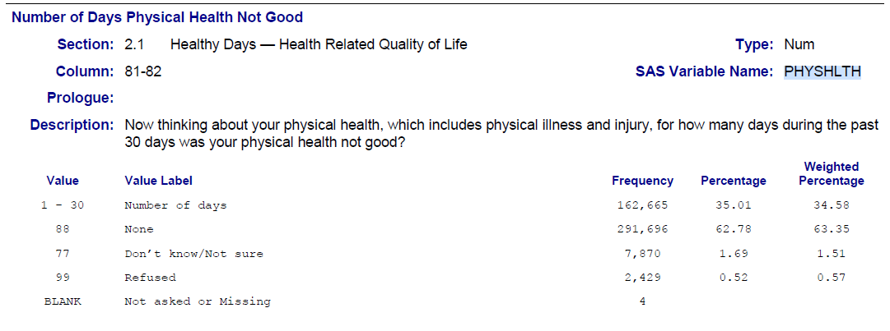

# Create a vector with some data that could be categorical
Sample_Vector <- c("A", "B", "A", "C", "A", "B", "A", "C", "A", "B")
# Create a data frame with the vector
data <- data.frame(Sample_Vector)Module 2: Descriptive Statistics and Data Prep
- The goal of this lesson is to teach you how to summarize descriptive statistics for both quantitative and qualitative data in R. To succeed, you will learn to differentiate between these data types and understand their context, which provides crucial information about how the data was collected and its intended use. Additionally, you will gain skills in cleaning datasets for analytics using dplyr, a powerful R package designed for intuitive and efficient data manipulation with data frames or tibbles, a modern reimagining of data frames provided by the tibble package.
At a Glance
- In order to succeed in this lesson, we need to be able to evaluate variables descriptively and understand how to clean and prepare data to make variables easier to use and in the correct form. This sometimes includes subsetting and filtering data alongside other techniques.
Lesson Objectives
- Choose and conduct descriptive analyses for categorical (factor) variables.
- Choose and conduct descriptive analyses for continuous (numeric) variables.
- Create variables and identify and change data types.
- Learn how to clean data via dplyr.
Consider While Reading
- In any analysis, it is critically important to understand your data set by evaluating descriptive statistics. For qualitative data, you should know how to calculate frequencies and proportions and make a user-friendly display of results. For quantitative data, you should know what a histogram is and how it is used to describe quantitative data. We also should know how to describe variables by their center and spread of the distribution. Finally, we should know how to clean datasets to be able to use them more effectively.
Summarizing Qualitative Data
- Qualitative data is information that cannot be easily counted, measured, or easily expressed using numbers.
- Nominal variables: a type of categorical variable that represents discrete categories or groups with no inherent order or ranking
- gender (male, female)
- marital status (single, married, divorced)
- eye color (blue, brown, green)
- Ordinal variables: categories possess a natural order or ranking
- a Likert scale measuring agreement with a statement (e.g., strongly disagree, disagree, neutral, agree, strongly agree)
- Nominal variables: a type of categorical variable that represents discrete categories or groups with no inherent order or ranking
- A frequency distribution shows the number of observations in each category for a factor or categorical variable.
- Guidelines when constructing frequency distribution:
- Classes or categories are mutually exclusive (they are all unique).
- Classes or categories are exhaustive (a full list of categories).
- To calculate frequencies, first, start with a variable that has categorical data.
- To count the number of each category value, we can use the table() command.
- The output shows a top row of categories and a bottom row that contains the number of observations in the category.
# Create a table of frequencies
frequencies <- table(data$Sample_Vector)
frequencies
A B C
5 3 2 - Relative frequency is how often something happens divided by all outcomes.
- The relative frequency is calculated by \(f_i/n\), where \(f_i\) is the frequency of class \(i\) and \(n\) is the total frequency.
- We can use the prop.table() command to calculate relative frequency by dividing each category’s frequency by the sample size.
# Calculate proportions
proportions <- prop.table(frequencies)- The cumulative relative frequency is given by \(cf_i/n\), where \(cf_i\) is the cumulative frequency of class \(i\).
- The cumsum() function calculates the cumulative distribution of the data
# Calculate cumulative frequencies
cumulfreq <- cumsum(frequencies)
# Calculate cumulative proportions
cumulproportions <- cumsum(prop.table(frequencies))- The rbind() function is used to combine multiple data frames or matrices by row. The name “rbind” stands for “row bind”. Since the data produced by the table is in rows, we can use rbind to link them together.
# combine into table
frequency_table <- rbind(frequencies, proportions, cumulfreq, cumulproportions)
# Print the table
frequency_table A B C
frequencies 5.0 3.0 2.0
proportions 0.5 0.3 0.2
cumulfreq 5.0 8.0 10.0
cumulproportions 0.5 0.8 1.0- We can transpose a table using the t() command, which flips the dataset.
TransposedData <- t(frequency_table)
TransposedData frequencies proportions cumulfreq cumulproportions
A 5 0.5 5 0.5
B 3 0.3 8 0.8
C 2 0.2 10 1.0- Finally, sometimes we need to transform our calculations into a dataset.
- The as.data.frame function is used to coerce or convert an object into a data frame.
- as.data.frame() is used when you have an existing object that needs to be coerced into a data frame. data.frame(), on the other hand, is for creating a data frame from scratch by specifying the data directly. Therefore, both as.data.frame() and data.frame() are used to convert or create data frames in R.
- as.data.frame() coerces an existing object (such as a list, matrix, or vector) into a data frame. Data.frame is used to create a new data frame from individual vectors or lists.
- as.data.frame() accepts a wider variety of inputs (like lists, matrices, and vectors), while data.frame() directly accepts vectors and lists to construct the data frame.
TransposedData <- as.data.frame(TransposedData)
TransposedData frequencies proportions cumulfreq cumulproportions
A 5 0.5 5 0.5
B 3 0.3 8 0.8
C 2 0.2 10 1.0Summarizing Quantitative Data
Defining and Calculating Central Tendency
- The term central location refers to how numerical data tend to cluster around some middle or central value.
- Measures of central location attempt to find a typical or central value that describes a variable.
- Why frequency distributions do not work for numeric variables:
- Numeric variables measured on a continuum.
- Instead, we calculate descriptive statistics including central tendency and spread of the values for a numeric variable.
- We will examine the three mostly widely used measures of central location: mean, median and mode.
- Then we discuss a percentile: a measure of relative position.
Using the Mean
The arithmetic mean or simply the mean is a primary measure of central location. It is often referred to as the average. Simply add up all the observations and divide by the number of observations.
The numerator (top of the fraction) is the sum (sigma) of all the values of x from the first value (i = 1) to the last value (n) divided by the number of values (n).
\(m_x = (\sum_{i=1}^{n} x_{i})/n\)
Consider the salaries of employees at a company:

We can use the mean() command to calculate the mean in R.
# Create Vector of Salaries
salaries <- c(40000, 40000, 65000, 90000, 145000, 150000, 550000)
# Calculate the mean using the mean() command
mean(salaries)[1] 154285.7- Note that due to at least one outlier this mean does not reflect the typical salary - more on that later.
- If we edit our vector to include NAs, we have to account for this. This is a common way to handle NAs in functions that do not allow for them.
salaries2 <- c(40000, 40000, 65000, 90000, 145000, 150000, 550000, NA,
NA)
# Calculate the mean using the mean() command Notice that it does not
# work
mean(salaries2)[1] NA# Add in na.rm parameter to get it to produce the mean with no NAs.
mean(salaries2, na.rm = TRUE)[1] 154285.7- Note that there are other types of means like the weighted mean or the geometric mean.
- The weighted mean uses weights to determine the importance of each data point of a variable. It is calculated by \(\bar{x}_w = \frac{\sum_{i=1}^{n} w_i x_i}{\sum_{i=1}^{n} w_i}\), where are the weights associated to the values.
- An example is below.
values <- c(4, 7, 10, 5, 6)
weights <- c(1, 2, 3, 4, 5)
weighted_mean <- weighted.mean(values, weights)
weighted_mean[1] 6.533333Using the Median
- The median is another measure of central location that is not affected by outliers.
- When the data are arranged in ascending order, the median is:
- The middle value if the number of observations is odd, or
- The average of the two middle values if the number of observations is even.
- Consider the sorted salaries of employees presented earlier which contains an odd number of observations.
- On the same salaries vector created above, use median() command to calculate the median in R.
# Calculate the median using the median() command
median(salaries)[1] 90000- Now compare to the mean and note the large difference in numbers signifying that at least one outlier is most likely present.
- Specifically, if the mean and median are different, it is likely the variable is skewed and contains outliers.
mean(salaries)[1] 154285.7- For another example, consider the sorted data below that contains an even number of values.
GrowthFund <- c(-38.32, 1.71, 3.17, 5.99, 12.56, 13.47, 16.89, 16.96, 32.16,
36.29)- When data contains an even number of values, the median is the average of the 2 sorted middle numbers (12.56 and 13.47).
median(GrowthFund)[1] 13.015(12.56 + 13.47)/2[1] 13.015# The mean is still the average
mean(GrowthFund)[1] 10.088Using the Mode
- The mode is another measure of central location.
- The mode is the most frequently occurring value in a data set.
- The mode is useful in summarizing categorical data but can also be used to summarize quantitative data.
- A data set can have no mode, one mode (unimodal), two modes (bimodal) or many modes (multimodal).
- The mode is less useful when there are more than three modes.
Example of Function with Salary Variable
- Consider the salary of employees presented earlier. The mode is $40,000 since this value appears most often.
# Try this command with and without it.
names(sort(x = table(salaries), decreasing = TRUE))[1] "40000" "65000" "90000" "145000" "150000" "550000"- 40,000 appears 2 times and is the mode because that occurs most often.
Finding No Mode
- Look at the sort(table()) commands with the GrowthFund Vector we made earlier.
- I added a [1:3] at the end of the statement to produce the 3 highest frequencies found in the vector.
sort(table(GrowthFund), decreasing = TRUE)[1:3]GrowthFund
-38.32 1.71 3.17
1 1 1 - Even if you use this command, you still need to evaluate the data more systematically to verify the mode. If the highest frequency of the sorted table is 1, then there is no mode.
Defining and Calculating Spread
- Spread is a measure of distance values are from the central value.
- Each measure of central tendency has one or more corresponding measures of spread.
- Mean: use variance or standard deviation to measure spread.
- skewness and kurtosis help measure spread as well.
- Median: use range or interquartile range (IQR) to measure spread.
- Mode: use the index of qualitative variation to measure spread.
- Not formally testing here with a function.
Spread to Report with the Mean
Evaluating Skewness
- Skewness is a measure of the extent to which a distribution is skewed.
- Can evaluate skewness visually with histogram.
- A histogram is a visual representation of a frequency or a relative frequency distribution.
- Bar height represents the respective class frequency (or relative frequency).
- Bar width represents the class width.

Skewed Distributions: Median Not Same as Mean
- Sometimes, a histogram is difficult to tell if skewness is present or if the data is relatively normal or symmetric.
- If Mean is less than Median and Mode, then the variable is Left-Skewed.
- If the Mean is greater than the Median and Mode, then the variable is Right-Skewed.
- If the Mean is about equal to the Median and Mode, then the variable has a symmetric distribution.
- In R, we can easily look at mean and median with the summary() command.

- Mean is great when data are normally distributed (data is not skewed).
- Mean is not a good representation of skewed data where outliers are present.
- Adding together a set of values that includes a few very large or very small values like those on the far left of a left-skewed distribution or the far right of the right-skewed distribution will result in a large or small total value in the numerator of Equation and therefore the mean will be a large or small value relative to the actual middle of the data.
Using skew() Command in R
- The skew() command is from the semTools package. The install.packages() command is commented out below, but install it one time on your R before commenting it out.
# install the semTools package if necessary.
# install.packages('semTools') Activate the library
library(semTools)- After the package is installed and loaded, run the skew() command on the salaries vector made above.
skew(salaries) skew (g1) se z p
2.31126775 0.92582010 2.49645450 0.01254418 Interpreting the skew() Command Results
se = standard error
z = skew/se
If the sample size is small (n < 50), z values outside the –2 to 2 range are a problem.
If the sample size is between 50 and 300, z values outside the –3.29 to 3.29 range are a problem.
For large samples (n > 300), using a visual is recommended over the statistics, but generally z values outside the range of –7 to 7 can be considered problematic.
Salary: Our sample size was small, <50, so the z value of 2.496 in regards to the salary vector indicates there is a problem with skewness.
GrowthFund: We can check the skew of GrowthFund.
skew(GrowthFund) skew (g1) se z p
-1.38071963 0.77459667 -1.78250137 0.07466751 - GrowthFund was also considered a small sample size, so the same -2/2 thresholds are used. Here, our z value is -1.78250137, which is in normal range. This indicates there is no problem with skewness.
Histograms
- A histogram is a graphical representation of the distribution of numerical data.
- It consists of a series of contiguous rectangles, or bars, where the area of each bar corresponds to the frequency of observations within a particular range or bin of values.
- The x-axis typically represents the range of values being measured, while the y-axis represents the frequency or count of observations falling within each range.
- Histograms are commonly used in statistics and data analysis to visualize the distribution of a dataset and identify patterns or trends.
- They are particularly useful for understanding the central tendency, variability, and shape of the data distribution - this includes our observation of skewness.
- Works much better with larger datsets.
Commands to Make a Histogram
hist() command in base R.
geom_histogram() command in ggplot2 package.
a hist using the GrowthFund dataset does not look that great because its sample size is so small.
hist(GrowthFund)hist vs geom_histogram
- In R, hist() and geom_histogram() are both used to create histograms, but they belong to different packages and have slightly different functionalities.
# Making an appropriate data.frame to use the hist() command
HousePrice <- c(430, 520, 460, 475, 670, 521, 670, 417, 533, 525, 538,
370, 530, 525, 430, 330, 575, 555, 521, 350, 399, 560, 440, 425, 669,
660, 702, 540, 460, 588, 445, 412, 735, 537, 630, 430)
HousePrice <- data.frame(HousePrice)- hist(): This function is from the base R graphics package and is used to create histograms. It provides a simple way to visualize the distribution of a single variable.
# Using base R to create the histogram.
hist(HousePrice$HousePrice, breaks = 5, main = "A Histogram", xlab = "House Prices (in $1,000s)",
col = "yellow")
library(tidyverse)- geom_histogram(): This function is from the ggplot2 package, which is part of the tidyverse. It is used to create histograms as part of a more flexible and powerful plotting system.
# Using geom_histogram() command to create the histogram.
ggplot(HousePrice, aes(x = HousePrice)) + geom_histogram(binwidth = 100,
boundary = 300, color = "black", fill = "yellow") + labs(title = "A Histogram",
x = "House Prices (in $1,000s)", y = "Frequency")We could add more parameters here to make the 2 histograms look identical, but this configuration of parameters is very close. Take note that there are a lot more parameters you can add to the geom_histogram() command than you can with base R to make it look more professional. Be sure to look them up and also check with the notes in the book, which focuses on geom_histogram instead of hist().
Variance is a measure of spread for numeric variables that is essentially the average of the squared differences between each observation value on some variable and the mean for that variable with population variance. \[Population Var(X) = \sigma^2 = \sum{(x_i-\mu)^2}/N\] \[Sample Var(x) = s^2 = \sum{(x_i-\bar{x})^2}/(n-1)\]
Standard deviation is the square root of the variance.
- Use var() command and sd() command to calculate sample variance and sample standard deviation.
## Calculated from Small Sample x <- c(1, 2, 3, 4, 5) sum((x - mean(x))^2/(5 - 1))[1] 2.5var(x)[1] 2.5sqrt(var(x))[1] 1.581139sd(x)[1] 1.581139sd(HousePrice$HousePrice) #102.6059[1] 102.6059var(HousePrice$HousePrice) #10527.97[1] 10527.97skew(HousePrice$HousePrice) #normalskew (g1) se z p 0.3173182 0.4082483 0.7772676 0.4370009- Use var() command and sd() command to calculate sample variance and sample standard deviation.
Looking at Spread for a Larger Dataset
customers <- read.csv("data/customers.csv")
summary(customers$Spending, na.rm = TRUE) #mean and median Min. 1st Qu. Median Mean 3rd Qu. Max.
50.0 383.8 662.0 659.6 962.2 1250.0 mean(customers$Spending, na.rm = TRUE) #mean by itself[1] 659.555median(customers$Spending, na.rm = TRUE) #median by itself[1] 662### Spread to Report with the Mean
sd(customers$Spending, na.rm = TRUE)[1] 350.2876var(customers$Spending, na.rm = TRUE)[1] 122701.4Kurtosis in Evaluating Mean Spread
Kurtosis is the sharpness of the peak of a frequency-distribution curve or more formally a measure of how many observations are in the tails of a distribution.
The formula for kurtosis is as follows: Kurtosis = \(\frac{n(n+1)}{(n-1)(n-2)(n-3)} \sum \left( \frac{(X_i - \bar{X})^4}{s^4} \right) - \frac{3(n-1)^2}{(n-2)(n-3)}\)
Where:
- \(n\) is the sample size
- \(X_i\) is each individual value
- \(\bar{X}\) is the mean of the data
- \(s\) is the standard deviation
- A normal distribution will have a kurtosis value of three, where distributions with kurtosis around 3 are described as mesokurtic, significantly higher than 3 indicate leptokurtic, and significantly under 3 indicate platykurtic.
- The kurtosis() command from the semTools package subtracts 3 from the kurtosis, so we can evaluate values by comparing them to 0. Positive values will be indicative to a leptokurtic distribution and negative will indicate a platykurtic distribution. To see if kurtosis (leptokurtic or platykurtic) is significant, we confirm them by first evaluating the z-score to see if the variable is normal or not. The same cutoff values from skew also apply for the z for small, medium, and large sample sizes in kurtosis. These are the same basic rules for the rules in judging skewness.
- The rules of determining problematic distributions with regards to kurtosis are below.
- If the sample size is small (n < 50), z values outside the –2 to 2 range are a problem.
- If the sample size is between 50 and 300, z values outside the –3.29 to 3.29 range are a problem.
- For large samples (n > 300), using a visual is recommended over the statistics, but generally z values outside the range of –7 to 7 can be considered problematic.
- If kurtosis is found, then evaluate the excess kur score to see if it is positive or negative to determine whether it is leptokurtic or platykurtic.
# z-value is 3.0398, which is > 2 indicating leptokurtic Small sample
# size: range is -2 to 2
kurtosis(salaries)Excess Kur (g2) se z p
5.628711065 1.851640200 3.039851407 0.002366949 # z-value is 2.20528007, which is > 2 indicating leptokurtic Small
# sample size: range is -2 to 2
kurtosis(GrowthFund)Excess Kur (g2) se z p
3.41640519 1.54919334 2.20528007 0.02743445 # Small sample size: range is -2 to 2 Skewness and kurtosis are both
# in range.
skew(HousePrice$HousePrice) #normalskew (g1) se z p
0.3173182 0.4082483 0.7772676 0.4370009 kurtosis(HousePrice$HousePrice) #normalExcess Kur (g2) se z p
-0.5399982 0.8164966 -0.6613601 0.5083814 - Let’s do a few more examples using the customers dataset.
# Noted sample size at 200 observations or a medium sample size.
# Using threshold –3.29 to 3.29 to assess normality.
#-3.4245446445 is below -3.29 so kurtosis is present
# Negative kurtosis value indicates platykurtic
kurtosis(customers$Spending)Excess Kur (g2) se z p
-1.1862970634 0.3464101615 -3.4245446445 0.0006158307 geom_histogram(binwidth = 100, fill = "pink", color = "black")geom_bar: na.rm = FALSE, orientation = NA
stat_bin: binwidth = 100, bins = NULL, na.rm = FALSE, orientation = NA, pad = FALSE
position_stack semTools::skew(customers$Spending) ##normal indicating no skewness skew (g1) se z p
-0.01836861 0.17320508 -0.10605123 0.91554171 # Normal: 2.977622119 is in between -3.29 and 3.29
kurtosis(customers$Income)Excess Kur (g2) se z p
1.031478559 0.346410162 2.977622119 0.002904939 ggplot(customers, aes(Income)) + geom_histogram(binwidth = 10000, fill = "pink",
color = "black")semTools::skew(customers$Income) #Skewed right skew (g1) se z p
8.741804e-01 1.732051e-01 5.047083e+00 4.486067e-07 #-3.7251961028 is below -3.29 so kurtosis is present
# Negative kurtosis value indicates platykurtic
kurtosis(customers$HHSize)Excess Kur (g2) se z p
-1.2904457837 0.3464101615 -3.7251961028 0.0001951634 ggplot(customers, aes(HHSize)) + geom_histogram(binwidth = 1, fill = "pink",
color = "black")semTools::skew(customers$HHSize) #normal skew (g1) se z p
-0.08891507 0.17320508 -0.51335141 0.60770553 # Normal: -0.20056607 is in between -3.29 and 3.29
kurtosis(customers$Orders)Excess Kur (g2) se z p
-0.06947812 0.34641016 -0.20056607 0.84103789 geom_histogram(binwidth = 5, fill = "pink", color = "black")geom_bar: na.rm = FALSE, orientation = NA
stat_bin: binwidth = 5, bins = NULL, na.rm = FALSE, orientation = NA, pad = FALSE
position_stack semTools::skew(customers$Orders) ##skewed right skew (g1) se z p
7.885502e-01 1.732051e-01 4.552697e+00 5.296255e-06 Spread to Report with the Median
Range = Maximum Value – Minimum Value.
- Simplest measure.
- Focuses on Extreme values.
- Use commands diff(range()) or max() – min().
IQR: Difference between the first and third quartiles.
- Use IQR() command or quantile() command.
summary(customers$Spending, na.rm = TRUE)Min. 1st Qu. Median Mean 3rd Qu. Max. 50.0 383.8 662.0 659.6 962.2 1250.0diff(range(customers$Spending, na.rm = TRUE))[1] 1200max(customers$Spending, na.rm = TRUE) - min(customers$Spending, na.rm = TRUE)[1] 1200IQR(customers$Spending, na.rm = TRUE)[1] 578.5
Spread to Report with the Mode
- While there is no great function to test for spread, you can look at the data and see if it is concentrated around 1 or 2 frequencies. If it is, then the spread is distorted towards those high frequency values.
Data Preparation
- We often spend a considerable amount of time inspecting and preparing the data for the subsequent analysis. This includes the following:
- Evaluating Data Types
- Sorting Data
- Selecting Variables
- Filtering Data
- Counting Data
- Handling Missing Values
- Summarizing
- Grouping Data
Evaluating Data Types
- There are a number of data types in R that are common to programming and statistical analysis.
- A data type of a variable specifies the type of data that is stored inside that variable. Sometimes when you read in data it is in the correct type, and other times, you need to force it into the type you need to conduct the analysis through a process called coercion.
- Factor (Nominal or Ordinal)
- Numeric (Real or Discrete (Integer))
- Character
- Logical
- Date
Coercing Data Types
In R, coercion is the process of converting one data type to another, often done automatically by R when necessary. For example, if you combine numeric and character data in a vector, R will coerce the numeric values to characters, as seen in c(1, “A”), which results in c(“1”, “A”). Coercion can also be done manually using functions like as.numeric() or as.factor() to change data types explicitly.
To determine whether a variable is numeric or categorical (factor), you can use the class() function. For example, if you have a variable age, running class(age) will tell you if it is stored as “numeric” or “factor”. Numeric variables represent quantities, such as continuous or discrete numbers, while categorical variables represent groups or categories, typically stored as factors. For example, a variable with levels like “Male” and “Female” would be a categorical (factor) variable.
Factor data type:
Ordinal: Contain categories that have some logical order (e.g. categories of age).
Nominal: Have categories that have no logical order (e.g., religious affiliation and marital status).
R will treat each unique value of a factor as a different level.
Ordinal Variable
- Ordinal data may be categorized and ranked with respect to some characteristic or trait.
- For example, instructors are often evaluated on an ordinal scale (excellent, good, fair, poor).
- A scale allows us to code the data based on order, assuming equal distance between scale items (aka likert items).
- You can make an ordinal factor data type in R or you can convert the order to meaningful numbers.
- To recode numbers in R, we would code poor to excellent = 1, 2, 3, 4 respectively.
- The recode() function from the dplyr package within the tidyverse ecosystem is used to replace specific values in a vector or variable with new values.
- It allows you to map old values to new ones in a simple and readable manner.
library(tidyverse)
# Take a vector representing evaluation scores, named evaluate
evaluate <- c("excellent", "good", "fair", "poor", "excellent", "good")
data <- data.frame(evaluate)
data <- data %>%
mutate(evaluate = recode(evaluate,
"excellent" = 4,
"good" = 3,
"fair" = 2,
"poor" = 1))
data evaluate
1 4
2 3
3 2
4 1
5 4
6 3Nominal Variable
- With nominal variables, data are simply categories for grouping.
- For example, coding race/ethnicity might have a category value of White, Black, Native American, Asian/Pacific Islander, Other.
- Qualitative values may be converted to quantitative values for analysis purposes. + White = 1, Black = 2, etc. This conversion to numerical representation of the category would be needed to run some analysis.
- Sometimes, R does this on our behalf depending on commands used.
- We can force a variable into a factor data type using the as.factor() command.
- If we use the read.csv() command, we can sometimes do this by setting an argument \(stringsAsFactors=TRUE\). We will do this later in the lesson.
Numerical data types:
A numerical data type is a vector of numbers (Real or Integer)
Continuous (Real) variables can take any value along some continuum, hence continuous.
- We can force a variable into a numerical data type by using the as.numeric() command.
- For example, we could collect information on a participants age, height, weight, or distance traveled.
Two ways to create:
- We can create a numeric variable by ensuring our value we assign is a number!
- We can force a variable into an real number data type by using the as.numeric() command.
# Assign Rhode Island limit for medical marijuana in ounces per # person kOuncesRhode <- 2.5 # Identify the data type class(x = kOuncesRhode)[1] "numeric"Discrete (Integer) Variables:
- Discrete variables can only take a countable number of distinct values.
- We can force a variable into an integer data type by using the as.integer() command.
For example, we could collect information on the number of children in a family or number of points scored in a basketball game.
# Assign the value of 4 to a constant called kTestInteger and set as
# an integer
kTestInteger <- as.integer(4)
class(kTestInteger) #Confirm the data type is an integer [1] "integer"# Use as.integer() to truncate the variable ouncesRhode
Trunc <- as.integer(kOuncesRhode)
Trunc[1] 2Character data type
- Wrapped in either single or double quotation marks.
- Includes letters, words, or numbers that cannot logically be included in calculations (e.g., a zip code).
- A quick example is below that shows how to assign a character value to a variable.
# Make constants
kFirstName <- "Pamela"
kLastName <- "Schlosser"
# Check the data type
class(x = kFirstName)[1] "character"# Create a zip code constant and check the data type
kZipCode <- "23185"
class(x = kZipCode)[1] "character"Logical data type
Values of TRUE and FALSE
Result of some expression.
- A quick example is below that shows how to assign a logical value to a variable.
# Store the result of 6 > 8 in a constant called kSixEight kSixEight <- 6 > 8 # Can use comparison tests with the following == >= <= > < <> != kSixEight # Print kSixEight[1] FALSE# Determine the data type of kSixEight class(x = kSixEight)[1] "logical"
Date data type
- A variable that should be a date.
# Convert date info in format 'mm/dd/yyyy' using as.Date
strDates <- c("01/05/1965", "08/16/1975")
dates <- as.Date(strDates, "%m/%d/%Y")
str(dates) Date[1:2], format: "1965-01-05" "1975-08-16"- lubridate is a package specifically for converting dates. This package makes dates a lot easier to work with.
# Convert date info in format 'mm/dd/yyyy' using lubridate
library(lubridate)
strDates <- c("01/05/1965", "08/16/1975")
dates <- mdy(strDates)
str(dates) Date[1:2], format: "1965-01-05" "1975-08-16"- If you are only given a year and a month, you can use the ym() command to turn it to a date. But take note that it will add a day to the value as a placeholder.
# Convert date info in format 'yyyymm' using lubridate
stryyyymm <- c("202201", "202003", "202204")
dates <- ym(stryyyymm)
str(dates) Date[1:3], format: "2022-01-01" "2020-03-01" "2022-04-01"# Convert date info in format 'mm/dd/yyyy' using as.Date
strDates <- c("01/05/1965", "08/16/1975")
dates <- as.Date(strDates, "%m/%d/%Y")
str(dates) Date[1:2], format: "1965-01-05" "1975-08-16"UseDates <- read.csv("data/Lubridate.csv")
UseDates$Date <- ym(UseDates$Date)
# You can use the month or year function to access the month or year
# from the date
UseDates$month <- month(UseDates$Date)
UseDates$year <- year(UseDates$Date)
## Now, you can access months or year numerically
summary(UseDates$month) Min. 1st Qu. Median Mean 3rd Qu. Max.
1.000 4.000 7.000 6.538 9.000 12.000 summary(UseDates$year) Min. 1st Qu. Median Mean 3rd Qu. Max.
2019 2020 2021 2021 2021 2022 ## You could code the seasons using a mutate function making a new
## variable 'season'
library(tidyverse)
UseDates <- UseDates %>%
mutate(season = case_when(month %in% 3:5 ~ "Spring", month %in% 6:8 ~
"Summer", month %in% 9:11 ~ "Fall", TRUE ~ "Winter"))
UseDates$season <- as.factor(UseDates$season)
summary(UseDates$season) Fall Spring Summer Winter
9 9 12 9 ## You could use a filter statement to select a particular year. In
## the example below, I save the filtered data into a new data frame
## UseDate2022.
UseDate2022 <- filter(UseDates, year == 2022)Nominal Example with Dataset
library(tidyverse)
gss.2016 <- read_csv(file = "data/gss2016.csv")# Examine the variable types with summary and class functions.
summary(gss.2016) grass age
Length:2867 Length:2867
Class :character Class :character
Mode :character Mode :character class(gss.2016$grass) #Check the data type.[1] "character"gss.2016$grass <- as.factor(gss.2016$grass) #Turn to a factor.
class(gss.2016$grass) #Confirming it is now correct.[1] "factor"Numerical Example with Dataset
- We need to ensure data can be coded as numeric before using the as.numeric() command. For example, to handle the variable age, it seems like numerical values except one value of “89 OR OLDER”. If as.numeric() command was used on this variable, it would put all the 89 and older observations as NAs. To force it to be a numerical variable, and keep that the sample participants were the oldest value, we need to recode it and then use the as.numeric() command to coerce it into a number.
- Recoding the 89 and older to 89 does cause the data to lack integrity in its current form because it will treat the people over 89 years old as 89. But, we are limited here because this needs to be a numerical variable for us to proceed. We will learn a step later on in this section to transform the age variable into categories so that we bring back our data integrity.
class(gss.2016$age)[1] "character"# Recode '89 OR OLDER' into just '89'
gss.2016$age <- recode(gss.2016$age, `89 OR OLDER` = "89")
# Convert to numeric data type
gss.2016$age <- as.numeric(gss.2016$age)
summary(gss.2016) #Conduct final check confirming correct data types grass age
DK : 110 Min. :18.00
IAP : 911 1st Qu.:34.00
LEGAL :1126 Median :49.00
NOT LEGAL: 717 Mean :49.16
NA's : 3 3rd Qu.:62.00
Max. :89.00
NA's :10 Common dplyr Functions
Arrange
- Sorting or arranging the dataset allows you to specify an order based on variable values.
- Sorting allows us to review the range of values for each variable, and we can sort based on a single or multiple variables.
- Notice the difference between sort() and arrange() functions below.
- The sort() function sorts a vector.
- The arrange() function sorts a dataset based on a variable.
- To conduct an example, read in the data set called gig.csv from your working directory.
gig <- read.csv("data/gig.csv", stringsAsFactors = TRUE, na.strings = "")
dim(gig)[1] 604 4head(gig) EmployeeID Wage Industry Job
1 1 32.81 Construction Analyst
2 2 46.00 Automotive Engineer
3 3 43.13 Construction Sales Rep
4 4 48.09 Automotive Other
5 5 43.62 Automotive Accountant
6 6 46.98 Construction EngineerUsing the arrange() function, we add the dataset, followed by a comma and then add in the variable we want to sort. This arranges from small to large.
Below is code to rearrange data based on Wage and save it in a new object.
sortTidy <- arrange(gig, Wage)
head(sortTidy) EmployeeID Wage Industry Job
1 467 24.28 Construction Engineer
2 547 24.28 Construction Sales Rep
3 580 24.28 Construction Accountant
4 559 24.42 Construction Engineer
5 16 24.76 Automotive Programmer
6 221 24.76 Automotive Programmer- We can apply a desc() function inside the arrange function to re-sort from high to low like shown below.
sortTidyDesc <- arrange(gig, desc(Wage))
head(sortTidyDesc) EmployeeID Wage Industry Job
1 110 51.00 Construction Other
2 79 50.00 Automotive Engineer
3 348 49.91 Construction Accountant
4 373 49.91 Construction Accountant
5 599 49.84 Automotive Engineer
6 70 49.77 Construction AccountantSubsetting or Filtering
Subsetting or filtering a data frame is the process of indexing, or extracting a portion of the data set that is relevant for subsequent statistical analysis. Subsetting allows you to work with a subset of your data, which is essential for data analysis and manipulation. One of the most common ways to subset in R is by using square brackets []. We can also use the filter() function from tidyverse.
We use subsets to do the following:
- View data based on specific data values or ranges.
- Compare two or more subsets of the data.
- Eliminate observations that contain missing values, low-quality data, or outliers.
- Exclude variables that contain redundant information, or variables with excessive amounts of missing values.
When working with data frames, you can subset by rows and columns using two indices inside the square brackets: data[row, column]. For example, if you have df <- data.frame(a = 1:3, b = c(“X”, “Y”, “Z”)), df[1, 2] would return the value “X”, which is the first row and second column. If you want the entire first row, you would use df[1, ], and to get the second column, you’d use df[, 2].
You can also use logical conditions to subset. For instance, x[x > 20] would return all values in x greater than 20, and in a data frame, you could filter rows where a certain condition holds, such as df[df$a > 1, ], which returns rows where column a has values greater than 1.
Let’s do an example using the customers.csv file we read in earlier as customers in the last lesson. Base R provides several methods for subsetting data structures. Below uses base R by using the square brackets dataset[row, column] format.
customers <- read.csv("data/customers.csv", stringsAsFactors = TRUE)
# To subset, note the dataset[row,column] format Results hidden to
# save space, but be sure to try this code in your .R file. Data in
# 1st row
customers[1, ]
# Data in 2nd column
customers[, 2]
# Data for 2nd column/1st observation (row)
customers[1, 2]
# First 3 columns of data
customers[, 1:3]- One of the most powerful and intuitive ways to subset data frames in R is by using the filter() function from the dplyr package, which is part of the tidyverse. Tidyverse is extremely popular when filtering data.
- The filter function is used to subset rows of a data frame based on certain conditions.
- The below example filters data by the College variable when category values are “Yes” and saves the filtered dataset into an object called college.
# Filtering by whether the customer has a 'Yes' for college. Saving
# this filter into a new object college which you should see in your
# global environment.
college <- filter(customers, College == "Yes")
# Showing first 6 records of college - note the College variable is
# all Yes's.
head(college) CustID Sex Race BirthDate College HHSize Income Spending Orders
1 1530016 Female Black 12/16/1986 Yes 5 53000 241 3
2 1531136 Male White 5/9/1993 Yes 5 94000 843 12
3 1532160 Male Black 5/22/1966 Yes 2 64000 719 9
4 1532307 Male White 9/16/1964 Yes 4 60000 582 13
5 1532387 Male White 8/27/1957 Yes 2 67000 452 9
6 1533017 Female Hispanic 5/14/1985 Yes 3 84000 153 2
Channel
1 SM
2 TV
3 TV
4 SM
5 SM
6 Web- Using the filter command, we can add filters pretty easily by using an & for and, or an | for or. The statement below filters by College and Income and save the new dataset in an object called twoFilters.
twoFilters <- filter(customers, College == "Yes" & Income < 50000)
head(twoFilters) CustID Sex Race BirthDate College HHSize Income Spending Orders
1 1533697 Female Asian 10/8/1974 Yes 3 42000 247 3
2 1535063 Female White 12/17/1982 Yes 3 42000 313 4
3 1544417 Male Hispanic 3/14/1980 Yes 4 46000 369 3
4 1547864 Female Hispanic 6/15/1987 Yes 2 44000 500 5
5 1550969 Female White 4/8/1978 Yes 4 47000 774 16
6 1553660 Female White 8/2/1988 Yes 2 47000 745 5
Channel
1 Web
2 TV
3 TV
4 TV
5 TV
6 SM- Next, we can do an or statement. The example below uses the filter command to filter by more than one category in the same field using the | in between the categories.
TwoRaces <- filter(customers, Race == "Black" | Race == "White")
head(TwoRaces) CustID Sex Race BirthDate College HHSize Income Spending Orders Channel
1 1530016 Female Black 12/16/1986 Yes 5 53000 241 3 SM
2 1531136 Male White 5/9/1993 Yes 5 94000 843 12 TV
3 1532160 Male Black 5/22/1966 Yes 2 64000 719 9 TV
4 1532307 Male White 9/16/1964 Yes 4 60000 582 13 SM
5 1532387 Male White 8/27/1957 Yes 2 67000 452 9 SM
6 1533791 Male White 10/27/1999 Yes 1 97000 1028 17 Web- The str_detect() function is used to detect the presence or absence of a pattern (regular expression) in a string or vector of strings. It returns a logical vector indicating whether the pattern was found in each element of the input vector.
- Using str_detect it with a filter function allows you to pull observations based on the inclusion of a string pattern.
library(tidyverse)
Birthday2000 <- filter(customers, str_detect(BirthDate, "1985"))Select
- In R, the select() function is part of the dplyr package, which is used for data manipulation. The select() function is specifically designed to subset or choose specific columns from a data frame. It allows you to select variables (columns) by their names or indices.
- Both statements below select Income, Spending, and Orders variables from the customers dataset and form them into a new dataset called smallData.
- The statements are written with and without the chaining operator.
smallData <- select(customers, Income, Spending, Orders)
head(smallData) Income Spending Orders
1 53000 241 3
2 94000 843 12
3 64000 719 9
4 60000 582 13
5 47000 845 7
6 67000 452 9Piping (Chaining) Operator
- The pipe operator takes the output of the expression on its left-hand side and passes it as the first argument to the function on its right-hand side. This enables you to chain multiple functions together, making the code easier to understand and debug.
- If we want to keep our code tidy, we can add the piping operator (%>%) to help combine our lines of code into a new object or overwriting the same object.
- This operator allows us to pass the result of one function/argument to the other one in sequence.
- The below example uses a select function to pull Income, Spending, and Orders variables fromt he customers dataset and save it as a new object called smallData. It is an identical request to the one directly above, but written with the piping operator.
smallData <- customers %>%
select(Income, Spending, Orders)Counting
Counting allows us to gain a better understanding and insights into the data.
This helps to verify that the data set is complete or determine if there are missing values.
In R, the length() function returns the number of elements in a vector, list, or any other object with a length attribute. It essentially counts the number of elements in the specified object.
# Gives the length of Industry
length(gig$Industry)[1] 604- For counting using tidyverse, we typically use the filter and count function together to filter by a value or state and then count the filtered data.
- In the function below, I use the piping operator to link together the filter and count functions into one command.
- Note that we need a piping operator (%>%) before each new function that is part of the chunk.
# Counting with a Categorical Variable Here we are filtering by
# Automotive Industry and then counting the number and saving it in a
# new object called countAuto
countAuto <- gig %>%
filter(Industry == "Automotive") %>%
count()
countAuto #190 n
1 190- Below, we are filtering by Wage and the counting.
# Counting with a Numerical Variable We could also save this in an
# object.
gig %>%
filter(Wage > 30) %>%
count() ##536 n
1 536We learned that there are 190 employees in the automotive industry and there are 536 employees who earn more than $30 per hour.
We could also calculate the number of people with wages under or equal to 30.
# We find 68 Wages under or equal to 30
WageLess30 <- gig %>%
filter(Wage <= 30) %>%
count() #
WageLess30 n
1 68- How many Accountants are there in the Job Category of the gig data set. The answer is shown below. Use filter and count to calculate this answer.
n
1 83Handling Missing Data
- After a data set is loaded, there are two common strategies for dealing with missing values.
The omission strategy recommends that observations with missing values be excluded from subsequent analysis.
The imputation strategy recommends that the missing values be replaced with some reasonable imputed values.
- Numeric variables: replace with the average.
- Categorical variables: replace with the predominant category.
Limitations of Using a Missing Data Technique
- Recommended Closer Evaluation of Missing Data
- There are limitations of both techniques listed above (omission and imputation).
- If a large number of values are missing, mean imputation will likely distort the relationships among variables, leading to biased results.
- Removing missing values could also significantly reduce your data set size.
- Missing data needs to be closely evaluated and verified within each variable whether the data is truly blank, has no answer, or is marked with a character value such as the text N/A.
- If the variable that has many missing values is deemed unimportant or can be represented using a proxy variable that does not have missing values, the variable may be excluded from the analysis.
- Missing data needs to be closely evaluated to see if the missing value is meaningful or not.
- For instance, getting data on how many pregnancies would only be applicable to people born of women gender, and blank value for people born of male gender, who are unable to have children, would be expected. In taking this example further, if variable 1 targeted the question, “how many pregnancies have you have had,” we would expect missing data or NAs for all the men. If comparing that variable to a second variable “Incubated from COVID-19: Yes/No” we would not want to omit all the blanks in the dataset because then we would eliminate analysis of an entire gender. Thus a different technique should be chosen besides omitting the blanks to be able to evaluate more concisely.
- For instance, getting data on how many pregnancies would only be applicable to people born of women gender, and blank value for people born of male gender, who are unable to have children, would be expected. In taking this example further, if variable 1 targeted the question, “how many pregnancies have you have had,” we would expect missing data or NAs for all the men. If comparing that variable to a second variable “Incubated from COVID-19: Yes/No” we would not want to omit all the blanks in the dataset because then we would eliminate analysis of an entire gender. Thus a different technique should be chosen besides omitting the blanks to be able to evaluate more concisely.
- If a value is not blank and is considered missing, data needs to be mutated to be consistent with the technique of coding true missing values.
The na.rm Parameter
y <- c(1, 2, NA, 3, 4, NA)
# These lines runs, but do not give you anything useful.
sum(y)[1] NAmean(y)[1] NAMany functions in R include parameters that will ignore NAs for you.
- sum() and mean() are examples of this, and most summary statistics like median() and var() also use the na.rm parameter to ignore the NAs. Always check the help to determine if na.rm is a parameter.
sum(y, na.rm = TRUE)[1] 10mean(y, na.rm = TRUE)[1] 2.5# na.omit removes the NAs from the vector of dataset. Here, it works # for removing NAs from the vector. y <- na.omit(y)
is.na()
- In R, the is.na() function is used to check for missing (NA) values in objects like vectors, data frames, or arrays. It returns a logical vector of the same length as the input object, where TRUE indicates a missing value and FALSE indicates a non-missing value.
# Counts the number of all NA values in the entire dataset
CountAllBlanks <- sum(is.na(gig))
CountAllBlanks[1] 26# Gives the observation number of the observations that include NA
# values
which(is.na(gig$Industry)) [1] 24 139 361 378 441 446 479 500 531 565# Produces a dataset with observations that have NA values in the
# Industry field.
ShowBlankObservations <- gig %>%
filter(is.na(Industry))
ShowBlankObservations EmployeeID Wage Industry Job
1 24 42.58 <NA> Sales Rep
2 139 42.18 <NA> Engineer
3 361 31.33 <NA> Other
4 378 48.09 <NA> Other
5 441 32.35 <NA> Accountant
6 446 30.76 <NA> Accountant
7 479 42.85 <NA> Consultant
8 500 43.13 <NA> Sales Rep
9 531 43.13 <NA> Engineer
10 565 38.98 <NA> Accountant# Counts the number of observations that have NA values in the
# Industry field. Industry is categorical, so we can count values
# based on it.
CountBlanks <- sum(is.na(gig$Industry))
CountBlanks[1] 10library(tidyverse)
# Counts the number of observations that have NA values in the Wage
# field.
CountBlanks <- sum(is.na(gig$Wage))
CountBlanks[1] 0Using na_if()
- The na_if() function in tidyr is used to replace specific values in a column with NA (missing) values. This function can be particularly useful when you want to standardize missing values across a dataset or when you want to replace certain values with NA for further data processing
TurnNA <- gig %>%
mutate(Job = na_if(Job, "Other"))
head(TurnNA) EmployeeID Wage Industry Job
1 1 32.81 Construction Analyst
2 2 46.00 Automotive Engineer
3 3 43.13 Construction Sales Rep
4 4 48.09 Automotive <NA>
5 5 43.62 Automotive Accountant
6 6 46.98 Construction Engineerna.omit() vs. drop_na()
Both functions return a new object with the rows containing missing values removed.
na.omit() is a base R function, so it doesn’t require any additional package installation where drop_na() requires loading the tidyr package, which is part of the tidyverse ecosystem.
drop_na() fits well into tidyverse pipelines, making it easy to integrate with other tidyverse functions where na.omit() can also be used in pipelines but might require additional steps to fit seamlessly.
# install.packages('Amelia')
library(Amelia)
data("africa")
summary(africa) year country gdp_pc infl
Min. :1972 Burkina Faso:20 Min. : 376.0 Min. : -8.400
1st Qu.:1977 Burundi :20 1st Qu.: 513.8 1st Qu.: 4.760
Median :1982 Cameroon :20 Median :1035.5 Median : 8.725
Mean :1982 Congo :20 Mean :1058.4 Mean : 12.753
3rd Qu.:1986 Senegal :20 3rd Qu.:1244.8 3rd Qu.: 13.560
Max. :1991 Zambia :20 Max. :2723.0 Max. :127.890
NA's :2
trade civlib population
Min. : 24.35 Min. :0.0000 Min. : 1332490
1st Qu.: 38.52 1st Qu.:0.1667 1st Qu.: 4332190
Median : 59.59 Median :0.1667 Median : 5853565
Mean : 62.60 Mean :0.2889 Mean : 5765594
3rd Qu.: 81.16 3rd Qu.:0.3333 3rd Qu.: 7355000
Max. :134.11 Max. :0.6667 Max. :11825390
NA's :5 summary(africa$gdp_pc) Min. 1st Qu. Median Mean 3rd Qu. Max. NA's
376.0 513.8 1035.5 1058.4 1244.8 2723.0 2 summary(africa$trade) Min. 1st Qu. Median Mean 3rd Qu. Max. NA's
24.35 38.52 59.59 62.60 81.16 134.11 5 africa1 <- na.omit(africa)
summary(africa1) year country gdp_pc infl
Min. :1972 Burkina Faso:20 Min. : 376.0 Min. : -8.40
1st Qu.:1976 Burundi :17 1st Qu.: 511.5 1st Qu.: 4.67
Median :1981 Cameroon :18 Median :1062.0 Median : 8.72
Mean :1981 Congo :20 Mean :1071.8 Mean : 12.91
3rd Qu.:1986 Senegal :20 3rd Qu.:1266.0 3rd Qu.: 13.57
Max. :1991 Zambia :20 Max. :2723.0 Max. :127.89
trade civlib population
Min. : 24.35 Min. :0.0000 Min. : 1332490
1st Qu.: 38.52 1st Qu.:0.1667 1st Qu.: 4186485
Median : 59.59 Median :0.1667 Median : 5858750
Mean : 62.60 Mean :0.2899 Mean : 5749761
3rd Qu.: 81.16 3rd Qu.:0.3333 3rd Qu.: 7383000
Max. :134.11 Max. :0.6667 Max. :11825390 ## to drop all at once.
africa2 <- africa %>%
drop_na()
summary(africa2) year country gdp_pc infl
Min. :1972 Burkina Faso:20 Min. : 376.0 Min. : -8.40
1st Qu.:1976 Burundi :17 1st Qu.: 511.5 1st Qu.: 4.67
Median :1981 Cameroon :18 Median :1062.0 Median : 8.72
Mean :1981 Congo :20 Mean :1071.8 Mean : 12.91
3rd Qu.:1986 Senegal :20 3rd Qu.:1266.0 3rd Qu.: 13.57
Max. :1991 Zambia :20 Max. :2723.0 Max. :127.89
trade civlib population
Min. : 24.35 Min. :0.0000 Min. : 1332490
1st Qu.: 38.52 1st Qu.:0.1667 1st Qu.: 4186485
Median : 59.59 Median :0.1667 Median : 5858750
Mean : 62.60 Mean :0.2899 Mean : 5749761
3rd Qu.: 81.16 3rd Qu.:0.3333 3rd Qu.: 7383000
Max. :134.11 Max. :0.6667 Max. :11825390 You try to load the airquality dataset from base R and look at a summary of the dataset.
- Sum the number of NAs in airquality.
- Omit all the NAs from airquality and save it in a new data object called airqual and take a new summary of it.
Ozone Solar.R Wind Temp Min. : 1.00 Min. : 7.0 Min. : 1.700 Min. :56.00 1st Qu.: 18.00 1st Qu.:115.8 1st Qu.: 7.400 1st Qu.:72.00 Median : 31.50 Median :205.0 Median : 9.700 Median :79.00 Mean : 42.13 Mean :185.9 Mean : 9.958 Mean :77.88 3rd Qu.: 63.25 3rd Qu.:258.8 3rd Qu.:11.500 3rd Qu.:85.00 Max. :168.00 Max. :334.0 Max. :20.700 Max. :97.00 NA's :37 NA's :7 Month Day Min. :5.000 Min. : 1.0 1st Qu.:6.000 1st Qu.: 8.0 Median :7.000 Median :16.0 Mean :6.993 Mean :15.8 3rd Qu.:8.000 3rd Qu.:23.0 Max. :9.000 Max. :31.0[1] 44Ozone Solar.R Wind Temp Min. : 1.0 Min. : 7.0 Min. : 2.30 Min. :57.00 1st Qu.: 18.0 1st Qu.:113.5 1st Qu.: 7.40 1st Qu.:71.00 Median : 31.0 Median :207.0 Median : 9.70 Median :79.00 Mean : 42.1 Mean :184.8 Mean : 9.94 Mean :77.79 3rd Qu.: 62.0 3rd Qu.:255.5 3rd Qu.:11.50 3rd Qu.:84.50 Max. :168.0 Max. :334.0 Max. :20.70 Max. :97.00 Month Day Min. :5.000 Min. : 1.00 1st Qu.:6.000 1st Qu.: 9.00 Median :7.000 Median :16.00 Mean :7.216 Mean :15.95 3rd Qu.:9.000 3rd Qu.:22.50 Max. :9.000 Max. :31.00
Summarize
- The summarize() command is used to create summary statistics for groups of observations in a data frame.
- In R, summary() and summarize() serve different purposes. summary() is part of base R and gives a quick overview of data, returning descriptive statistics for each column. For example, summary(mtcars) provides the min, max, median, and mean for numeric columns and counts for factors. It’s useful for a broad snapshot of your dataset.
- In contrast, summarize() (or summarise()) is from the dplyr package and allows for custom summaries. For instance, mtcars %>% summarize(avg_mpg = mean(mpg), max_hp = max(hp)) returns the average miles per gallon and the maximum horsepower. It’s more flexible and is often used with group_by() for grouped calculations. In conclusion, summary() gives automatic overviews, while summarize() is better for tailored summaries.
- In the example below, we can summarize more than one thing into tidy output.
gig %>%
drop_na() %>%
summarize(mean.days = mean(Wage), sd.days = sd(Wage), var.days = var(Wage),
med.days = median(Wage), iqr.days = IQR(Wage)) mean.days sd.days var.days med.days iqr.days
1 40.14567 7.047058 49.66103 41.82 11.465Group_by
- group_by is used for grouping data by one or more variables. When you use group_by() on a data frame, it doesn’t actually perform any computations immediately. Instead, it sets up the data frame in such a way that any subsequent operations are performed within these groups
- summarize() is often used in combination with group_by() to calculate summary statistics within groups
## summarize data by Industry variable.
groupedData <- gig %>%
group_by(Industry) %>%
summarize(meanWage = mean(Wage))
groupedData# A tibble: 4 × 2
Industry meanWage
<fct> <dbl>
1 Automotive 43.4
2 Construction 38.3
3 Tech 40.7
4 <NA> 39.5## same function with na's dropped.
groupedData <- gig %>%
drop_na() %>%
group_by(Industry) %>%
summarize(meanWage = mean(Wage))
groupedData# A tibble: 3 × 2
Industry meanWage
<fct> <dbl>
1 Automotive 43.4
2 Construction 38.4
3 Tech 40.7Mutate
- mutate() is part of the dplyr package, which is used for data manipulation. The mutate() function is specifically designed to create new variables (columns) or modify existing variables in a data frame. It is commonly used in data wrangling tasks to add calculated columns or transform existing ones.
- One example is below, but note that there are many things you can do with the mutate function.
# making a new variable called calculation that multiplies gdp_pc by
# infl variables in the africa1 dataset.
africa.mutated <- mutate(africa1, calculation = gdp_pc * infl)
head(africa.mutated) year country gdp_pc infl trade civlib population calculation
1 1972 Burkina Faso 377 -2.92 29.69 0.5000000 5848380 -1100.84
2 1973 Burkina Faso 376 7.60 31.31 0.5000000 5958700 2857.60
3 1974 Burkina Faso 393 8.72 35.22 0.3333333 6075700 3426.96
4 1975 Burkina Faso 416 18.76 40.11 0.3333333 6202000 7804.16
5 1976 Burkina Faso 435 -8.40 37.76 0.5000000 6341030 -3654.00
6 1977 Burkina Faso 448 29.99 41.11 0.6666667 6486870 13435.52- Below is an example with the iris dataset, which is part of base R.
data("iris")
## Selecting 2 variables from the iris dataset: Sepal.Length and
## Petal.Length
selected_data <- select(iris, Sepal.Length, Petal.Length)
head(selected_data) Sepal.Length Petal.Length
1 5.1 1.4
2 4.9 1.4
3 4.7 1.3
4 4.6 1.5
5 5.0 1.4
6 5.4 1.7# Filter rows based on a condition: Species = setosa
filtered_data <- filter(iris, Species == "setosa")
head(filtered_data) Sepal.Length Sepal.Width Petal.Length Petal.Width Species
1 5.1 3.5 1.4 0.2 setosa
2 4.9 3.0 1.4 0.2 setosa
3 4.7 3.2 1.3 0.2 setosa
4 4.6 3.1 1.5 0.2 setosa
5 5.0 3.6 1.4 0.2 setosa
6 5.4 3.9 1.7 0.4 setosa# Arrange rows by the Sepal.Length column
arranged_data <- arrange(iris, Sepal.Length)
# Create a new column by mutating the data by transforming
# Petal.Width to the log form.
mutated_data <- mutate(iris, Petal.Width_Log = log(Petal.Width))Full Examples
gss.2016 Data Cleaning
- First, because we made some edits to the data set, reread in version a using the read.csv command. This brings the data set back to its original form. It is always a good idea to read the dataset back in when you are unsure about whether you have made a mistake during data preparation that could cause a lack of data integrity.
gss.2016 <- read.csv(file = "data/gss2016.csv")- Before we remove any missing data, we need it to be the correct data type. In this case, grass should be a factor.
# We coerced this variable earlier, but the object was called
# gss.2016. Since we reread in the data set, this needs to be done
# again.
gss.2016$grass <- as.factor(gss.2016$grass)- The statement below is an equivalent to the function above, but written with the piping operator. It is overwriting gss.2016 after conducting the coercion to factor.
- We added the mutate function because we are going to add other data cleaning tasks to this statement.
gss.2016 <- gss.2016 %>%
mutate(grass = as.factor(grass))Piping to More Functions: Missing Data
- In the code below, the as.factor() command has been moved inside a broader mutate statement (that uses tidyverse library) and piped to it the na_if() command that handles missing data. If you use more than one data manipulation statement, the mutate() command is needed to help organize your code with one mutate() is needed for each major change you are making.
- In the code below, we created a new object gss.2016.cleaned to help store the cleaned version of the dataset. This helps maintain data integrity because your original dataset is still intact and each time, you rerun the entire chunk, which includes all the changes at one time.
gss.2016.cleaned <- gss.2016 %>%
# Moved coercion statement into a mutate function to keep code
# tidy
mutate(grass = as.factor(grass)) %>%
# Moving DK value to NA for not applicable
mutate(grass = na_if(x = grass, y = "DK"))
# Check the summary, there should be 110 + 3 = 113 in the NA category
summary(object = gss.2016.cleaned) grass age
DK : 0 Length:2867
IAP : 911 Class :character
LEGAL :1126 Mode :character
NOT LEGAL: 717
NA's : 113 Drop Levels
The droplevels function is part of base R and is used to drop unused levels from factor variables in a data frame. It works by removing any levels from a factor variable that are not present in the data.
Next, we want to edit our code to convert IAP and DK to NA values and drop levels that have are empty.
- Note the Piping operator added to the end of the DK line so you can keep going with new commands editing gss.2016.cleaned.
gss.2016.cleaned <- gss.2016 %>% mutate(grass = as.factor(grass)) %>% # Added piping operator mutate(grass = na_if(x = grass, y = "DK")) %>% # Turn to na if value of grass = IAP mutate(grass = na_if(x = grass, y = "IAP")) %>% # Drop levels in grass that have no values mutate(grass = droplevels(x = grass)) # Check what you just did summary(gss.2016.cleaned)grass age LEGAL :1126 Length:2867 NOT LEGAL: 717 Class :character NA's :1024 Mode :character
Coercing to Numeric
- Next, we handle a numerical variable, age. Age again has an issue being able to be numerical data type because it has “89 OR OLDER” as a value. Before using the as.numeric() command, we need to recode it. We did this above as a stand-alone statement.
gss.2016.cleaned <- gss.2016 %>%
mutate(grass = as.factor(grass)) %>%
mutate(grass = na_if(x = grass, y = "DK")) %>%
mutate(grass = na_if(x = grass, y = "IAP")) %>%
# Added piping operator
mutate(grass = droplevels(x = grass)) %>%
# Ensure variable can be coded as numeric and fix if necessary.
mutate(age = recode(age, `89 OR OLDER` = "89")) %>%
# Coerce into numeric
mutate(age = as.numeric(x = age))
# Check what you just did
summary(gss.2016.cleaned) grass age
LEGAL :1126 Min. :18.00
NOT LEGAL: 717 1st Qu.:34.00
NA's :1024 Median :49.00
Mean :49.16
3rd Qu.:62.00
Max. :89.00
NA's :10 The recode() command that is part of dplyr is like the ifelse() command that is in base R. There are a lot of ways to recode in R.
Finally, we want to take our numerical variable, age, and cut it at certain breaks to make categories that can be easily analyzed.
- This also ensures that anyone above 89 is coded correctly in a category instead of as the value 89. This again brings back data integrity.
- The cut() function generates class limits and bins used in frequency distributions (and histograms) for quantitative data.
- Here, we are using it to cut age into a categorical variable.
gss.2016.cleaned <- gss.2016 %>% mutate(grass = as.factor(grass)) %>% mutate(grass = na_if(x = grass, y = "DK")) %>% mutate(grass = na_if(x = grass, y = "IAP")) %>% mutate(grass = droplevels(grass)) %>% mutate(age = recode(age, `89 OR OLDER` = "89")) %>% # Added piping operator mutate(age = as.numeric(age)) %>% # Cut numeric variable into groupings mutate(age.cat = cut(age, breaks = c(-Inf, 29, 59, 74, Inf), labels = c("< 30", "30 - 59", "60 - 74", "75+"))) # Check what you just did summary(gss.2016.cleaned)grass age age.cat LEGAL :1126 Min. :18.00 < 30 : 481 NOT LEGAL: 717 1st Qu.:34.00 30 - 59:1517 NA's :1024 Median :49.00 60 - 74: 598 Mean :49.16 75+ : 261 3rd Qu.:62.00 NA's : 10 Max. :89.00 NA's :10
brfss Data Cleaning
- The full codebook where this screenshot is taken is brfss_2014_codebook.pdf.

brfss <- read.csv("data/brfss.csv")
summary(brfss) TRNSGNDR X_AGEG5YR X_RACE X_INCOMG
Min. :1.00 Min. : 1.000 Min. :1.000 Min. :1.000
1st Qu.:4.00 1st Qu.: 5.000 1st Qu.:1.000 1st Qu.:3.000
Median :4.00 Median : 8.000 Median :1.000 Median :5.000
Mean :4.06 Mean : 7.822 Mean :1.992 Mean :4.481
3rd Qu.:4.00 3rd Qu.:10.000 3rd Qu.:1.000 3rd Qu.:5.000
Max. :9.00 Max. :14.000 Max. :9.000 Max. :9.000
NA's :310602 NA's :94
X_EDUCAG HLTHPLN1 HADMAM X_AGE80
Min. :1.000 Min. :1.000 Min. :1.00 Min. :18.00
1st Qu.:2.000 1st Qu.:1.000 1st Qu.:1.00 1st Qu.:44.00
Median :3.000 Median :1.000 Median :1.00 Median :58.00
Mean :2.966 Mean :1.108 Mean :1.22 Mean :55.49
3rd Qu.:4.000 3rd Qu.:1.000 3rd Qu.:1.00 3rd Qu.:69.00
Max. :9.000 Max. :9.000 Max. :9.00 Max. :80.00
NA's :208322
PHYSHLTH
Min. : 1.0
1st Qu.:20.0
Median :88.0
Mean :61.2
3rd Qu.:88.0
Max. :99.0
NA's :4 Qualitative Variable
- To look at an example, the one below seeks to understand the healthcare issue in reporting gender based on different definitions. The dataset is part of the Behavioral Risk Factor Surveillance System (brfss) dataset (2014), which includes lots of other variables besides reported gender.
# Load the data
brfss <- read.csv("data/brfss.csv")
# Summarize the TRNSGNDR variable
summary(object = brfss$TRNSGNDR) Min. 1st Qu. Median Mean 3rd Qu. Max. NA's
1.00 4.00 4.00 4.06 4.00 9.00 310602 # Find frequencies
table(brfss$TRNSGNDR)
1 2 3 4 7 9
363 212 116 150765 1138 1468 - Since this table is not very informative, we need to do some edits.
- Check the class of the variable to see the issue with analyzing it as a categorical variable.
class(brfss$TRNSGNDR)[1] "integer"- First, we need to change the TRNSGNDR variable to a factor using as.factor().
# Change variable from numeric to factor
brfss$TRNSGNDR <- as.factor(brfss$TRNSGNDR)
# Check data type again to ensure factor
class(brfss$TRNSGNDR)[1] "factor"- Then, we need to do some data cleaning on the TRNSGNDR Variable.
brfss.cleaned <- brfss %>%
mutate(TRNSGNDR = recode_factor(TRNSGNDR,
'1' = 'Male to female',
'2' = 'Female to male',
'3' = 'Gender non-conforming',
'4' = 'Not transgender',
'7' = 'Not sure',
'9' = 'Refused'))- We can use the levels() command to show the factor levels made with the mutate() command above.
levels(brfss.cleaned$TRNSGNDR)[1] "Male to female" "Female to male" "Gender non-conforming"
[4] "Not transgender" "Not sure" "Refused" - Check the summary.
summary(brfss.cleaned$TRNSGNDR) Male to female Female to male Gender non-conforming
363 212 116
Not transgender Not sure Refused
150765 1138 1468
NA's
310602 - Take a good look at the table to interpret the frequencies in the output above. The highest percentage was the “NA’s” category, followed by “Not transgender”. Removing the NA’s moved the “Not transgender” category to over 97% of observations.
Quantitative Variable
- Let’s use the cleaned dataset to make more changes to the continuous variable PHYSHLTH. In the codebook, it looks like the data is most applicable to the first 2 categories. The 1-30 days coding and the 88 coding, which means 0 days of physical illness and injury.
- Using cleaned data, we need to prep the variable a little more before getting an accurate plot.
- Specifically, we need to null out the 77 and 99 values and make sure the 88 coding is set to be 0 for 0 days of illness and injury.
brfss.cleaned <- brfss %>%
mutate(TRNSGNDR = recode_factor(TRNSGNDR, `1` = "Male to female", `2` = "Female to male",
`3` = "Gender non-conforming", `4` = "Not transgender", `7` = "Not sure",
`9` = "Refused")) %>%
# Turn the 77 values to NA's.
mutate(PHYSHLTH = na_if(PHYSHLTH, y = 77)) %>%
# Turn the 99 values to NA's.
mutate(PHYSHLTH = na_if(PHYSHLTH, y = 99)) %>%
# Recode the 88 values to be numeric value of 0.
mutate(PHYSHLTH = recode(PHYSHLTH, `88` = 0L))The histogram showed most people have between 0 and 10 unhealthy days per 30 days.
Next, evaluate mean, median, and mode for the PHYSHLTH variable after ignoring the blanks.
mean(brfss.cleaned$PHYSHLTH, na.rm = TRUE)[1] 4.224106median(brfss.cleaned$PHYSHLTH, na.rm = TRUE)[1] 0names(x = sort(x = table(brfss.cleaned$PHYSHLTH), decreasing = TRUE))[1][1] "0"- While the mean is higher at 4.22, the median and most common number is 0.
## Spread to Report with the Mean
var(brfss.cleaned$PHYSHLTH, na.rm = TRUE)[1] 77.00419sd(brfss.cleaned$PHYSHLTH, na.rm = TRUE)[1] 8.775203## Spread to Report with Median
summary(brfss.cleaned$PHYSHLTH, na.rm = TRUE) Min. 1st Qu. Median Mean 3rd Qu. Max. NA's
0.000 0.000 0.000 4.224 3.000 30.000 10303 range(brfss.cleaned$PHYSHLTH, na.rm = TRUE)[1] 0 30max(brfss.cleaned$PHYSHLTH, na.rm = TRUE) - min(brfss.cleaned$PHYSHLTH,
na.rm = TRUE)[1] 30IQR(brfss.cleaned$PHYSHLTH, na.rm = TRUE)[1] 3library(semTools)
# Plot the data
brfss.cleaned %>%
ggplot(aes(PHYSHLTH)) + geom_histogram()
# Calculate Skewness and Kurtosis
skew(brfss.cleaned$PHYSHLTH) skew (g1) se z p
2.209078e+00 3.633918e-03 6.079054e+02 0.000000e+00 kurtosis(brfss.cleaned$PHYSHLTH)Excess Kur (g2) se z p
3.474487e+00 7.267836e-03 4.780634e+02 0.000000e+00 - The skew results provide a z of 607.905 (6.079054e+02) which is much higher than 7 (for large datasets). This indicates a clear right skew which means the data is not normally distributed.
- The kurtosis results are also very leptokurtic with a score of 478.063.
Using Filters Example
Below takes an example of the brfss data to filter by certain variable statuses.
- The first filter() chose observations that were any one of the three categories of transgender included in the data. Used the | “or” operator for this filter().
- The second filter chose people in an age category above category 4 but below category 12, in the age categories 5 through 11.
- The last filter used the !is.na to choose observations where HADMAM variable was not NA.
Next, we reduce data set to contain only variables used to create table by using the select() command.
Next, we change all the remaining variables in data set to factors using mutate_all() command. This not only changes the strings to factors, but also changes the numerical variables to factors.
Finally, we use mutate() commands to change the variable category to something meaningful(from the codebook).
- Notice the backslash before the apostrophe in Don’t in the X_INCOMG recode. This is to prevent the .R file from ending the quotations. You could use double quotes around the statement to bypass this, or add the backslash like I did here.
brfss_small <- brfss.cleaned %>% filter(TRNSGNDR == "Male to female" | TRNSGNDR == "Female to male" | TRNSGNDR == "Gender non-conforming") %>% filter(X_AGEG5YR > 4 & X_AGEG5YR < 12) %>% filter(!is.na(HADMAM)) %>% select(TRNSGNDR, X_AGEG5YR, X_RACE, X_INCOMG, X_EDUCAG, HLTHPLN1, HADMAM) %>% mutate_all(as.factor) %>% # The next few mutates add labels to categorical variables based # on the codebook. mutate(X_AGEG5YR = recode_factor(X_AGEG5YR, `5` = "40-44", `6` = "45-49", `7` = "50-54", `8` = "55-59", `9` = "60-64", `10` = "65-69", `11` = "70-74")) %>% mutate(X_INCOMG = recode_factor(X_INCOMG, `1` = "Less than 15,000", `2` = "15,000 to less than 25,000", `3` = "25,000 to less than 35,000", `4` = "35,000 to less than 50,000", `5` = "50,000 or more", `9` = "Don't know/not sure/missing")) %>% mutate(X_EDUCAG = recode_factor(X_EDUCAG, `1` = "Did not graduate high school", `2` = "Graduated high school", `3` = "Attended college/technical school", `4` = "Graduated from college/technical school", `9` = NA_character_)) %>% mutate(HLTHPLN1 = recode_factor(HLTHPLN1, `1` = "Yes", `2` = "No", `7` = "Don't know/not sure/missing", `9` = "Refused")) %>% mutate(X_RACE = recode_factor(X_RACE, `1` = "White", `2` = "Black", `3` = "Native American", `4` = "Asian/Pacific Islander", `5` = "Other", `6` = "Other", `7` = "Other", `8` = "Other", `9` = "Other")) # print a summary summary(brfss_small)TRNSGNDR X_AGEG5YR X_RACE Male to female : 77 40-44:27 White :152 Female to male :113 45-49:27 Black : 31 Gender non-conforming: 32 50-54:32 Native American : 4 Not transgender : 0 55-59:44 Asian/Pacific Islander: 6 Not sure : 0 60-64:44 Other : 29 Refused : 0 65-69:24 70-74:24 X_INCOMG X_EDUCAG Less than 15,000 :46 Did not graduate high school :24 15,000 to less than 25,000 :44 Graduated high school :86 25,000 to less than 35,000 :19 Attended college/technical school :68 35,000 to less than 50,000 :26 Graduated from college/technical school:44 50,000 or more :65 Don't know/not sure/missing:22 HLTHPLN1 HADMAM Yes:198 1:198 No : 24 2: 22 9: 2This data set full of categorical variables is now fully cleaned and ready to be analyzed!
Using AI
Use the following prompts on a generative AI, like chatGPT, to learn more about descriptive statistics.
What is the difference between mean, median, and mode in describing data distributions, and how can each be used to understand the shape of a distribution? * How do mean and median help identify whether a distribution is skewed, and what does it tell us about the dataset?
Can you explain how the mean, median, and mode behave in normal, positively skewed, and negatively skewed distributions?
What are standard deviation (SD) and variance, and how do they measure the spread of data in a distribution?
Explain the differences between range, interquartile range (IQR), and standard deviation in describing the variability in a dataset.
How does a high standard deviation or variance affect the interpretation of a dataset compared to a low standard deviation?
What is skewness, and how does it affect the shape of a distribution? How can we identify positive and negative skew?
How is kurtosis defined in the semTools package in R, and what does it tell us about the tails of a distribution?
How would you compare and contrast the roles of skewness and kurtosis in identifying the shape and behavior of a distribution?
What is the difference between ordinal and nominal variables, and how can you recode these data types in R?
Explain the steps to coerce a character variable into a factor using the as.factor() function in R.
How can you use the filter() function to subset a dataset based on multiple conditions using & and | in R?
How does subsetting using square brackets [] differ from using the filter() function in R?
What strategies can you use to handle missing data in R, and how does na.omit() differ from drop_na()?
How does the mutate() function help in transforming and creating new variables, and what are some practical examples?”
What is the purpose of the group_by() function, and how does it interact with summarize() to create summary statistics in R?”
Explain how you can use arrange() to sort a dataset by one or more variables and demonstrate sorting both in ascending and descending order.”
Why is the piping operator %>% useful in R, and how does it improve the readability and structure of your code?
How would you use summarize() to calculate mean, median, and standard deviation for a numerical variable in R?
Summary
- In this lesson, we worked through descriptive statistics including skewness and kurtosis. We learned about variables and scales of measurement, how to summarize qualitative and quantitative data.
- We then worked through the basics on data cleaning. Data cleaning is so important and there are so many ways to do it. Provided are some examples using popular functions in dplyr (under tidyverse).